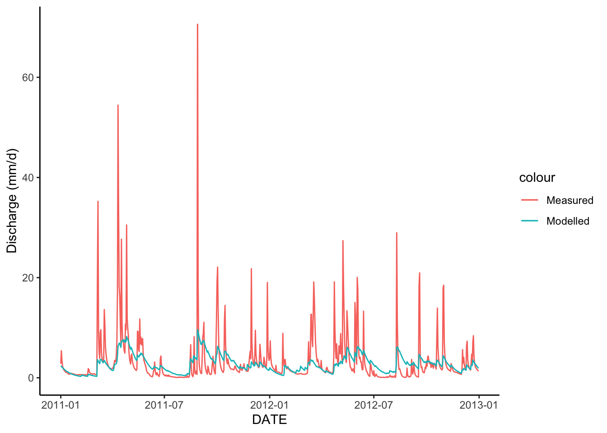

Chapter 17 Intro to Modeling - Getting Started with HBV
17.1 Introduction
The following activity is available as a template github repository at the following link: https://github.com/VT-Hydroinformatics/16-Intro-Modeling-HBV
Before we start with the code below, we will briefly discuss modeling in general, using the following reading as a guide: https://cfpub.epa.gov/si/si_public_record_report.cfm?dirEntryId=339328&Lab=NERL
Please be prepared to discuss the reading at the start of class.
Goals for this activity:
- Become familiar with the process of running a simple hydrologic model
- Try parameterizing the model manually
- Introduction to methods of assessing model success
library(tidyverse)
library(lubridate)
library(patchwork)
library(plotly)
theme_set(theme_classic())17.2 Creating the HBV model function
The code for the HBV model is in the HBV folder, it is called HBV.R. We will open that and look at the code a bit to discuss how HBV works.
The code in HBV.R creates a function that runs the HBV model. We can run that code by using the source() function in. When we give the location of the HBV.R file to source(), it runs the code and creates the HBV function. Run the line of code below, then type HBV( and you’ll see the input parameters pop up just like any other function.
From this we see that HBV takes as input pars, P, Temp, PET, and routing.
pars is a vector of all the parameters that HBV uses to run (discussed below) P is a vector of precipitation values Temp is a vector of temperature values PET is a vector of PET values And routing is a parameter that controls how water is routes through the channel of larger watersheds. We will not use this because we are running the model on a small watershed.
HBV is a lumped conceptual model. We will use the diagram below and the HBV.R code to discuss how the model works and get an idea of what the parameters do.
 This schematic was reproduced from: Durga Lal Shrestha & Dimitri P. Solomatine (2008) Data‐driven approaches for estimating uncertainty in rainfall‐runoff modelling, International Journal of River Basin Management, 6:2, 109-122, DOI: 10.1080/15715124.2008.9635341
This schematic was reproduced from: Durga Lal Shrestha & Dimitri P. Solomatine (2008) Data‐driven approaches for estimating uncertainty in rainfall‐runoff modelling, International Journal of River Basin Management, 6:2, 109-122, DOI: 10.1080/15715124.2008.9635341
source('HBV/HBV.R')17.3 Read in Precip and Temp
Our objective today is basically to get the model running with data from watershed 3 at the Hubbard Brook experimental forest in NH, USA.
Watershed 3 is a hydrologic reference watershed at HBEF. This means it hasn’t been experimentally manipulated, but discharge, temperature, and precipitation have been recorded there for a long time. This makes it a good candidate for some modeling! You can see more about watershed 3 here: https://hubbardbrook.org/watersheds/watershed-3
As we saw in the chunk above, we need P, Temp, PET, and a set of parameters to run the model.
We will talk parameters later, but for now we need the data that drives the model: P, Temp, and PET.
We have P and Temp. The data is in Pwd2009-2012.csv and Tdm2009-2012.csv.
So how do we get PET?
We calculate it! But before we do that let’s bring in the precip and temp data and format them how the model wants them.
Our model function just wants a vector of values. No dates attached. So we must be careful that each set of input data is for the same amount of time with the same number of values. To help with that, we will start below by defining and start and end date for the model run.
Finally, we will read in the data, select the gage or station we want to represent the watershed, change the format of the date column, and then filter to our start and end date.
Then we will pull out just the data, so it can be passed to the model.
start <- mdy("01-01-2009")
end <- mdy("12-31-2012")
#Precip
P1 <- read_csv("HBV/Pwd2009-2012.csv") %>%
select(DATE, WS_3) %>%
mutate(DATE = ymd(DATE)) %>%
filter(DATE >= start & DATE <= end)## Rows: 1461 Columns: 10
## ── Column specification ────────────────────────────────────────────────────────
## Delimiter: ","
## dbl (10): DATE, WS_1, WS_2, WS_3, WS_4, WS_5, WS_6, WS_7, WS_8, WS_9
##
## ℹ Use `spec()` to retrieve the full column specification for this data.
## ℹ Specify the column types or set `show_col_types = FALSE` to quiet this message.P <- P1$WS_3
#Temp in deg C
Temp1 <- read_csv("HBV/Tdm2009-2012.csv")%>%
select(DATE, STA_1) %>%
mutate(DATE = ymd(DATE)) %>%
filter(DATE >= start & DATE <= end)## Rows: 1461 Columns: 9
## ── Column specification ────────────────────────────────────────────────────────
## Delimiter: ","
## dbl (9): DATE, STA_1, STA_6, STA_14, STA_INT, STA_HQ, STA_23, STA_17, STA_24
##
## ℹ Use `spec()` to retrieve the full column specification for this data.
## ℹ Specify the column types or set `show_col_types = FALSE` to quiet this message.Temp <- Temp1$STA_117.4 Calculate PET
Next, we need to calculate PET for the same time reange as our temperature and precipitation record.
We will use the Hamon method to calculate PET for each day of the record.
To do that we will take the latitude of the site in radians…
lat <- 43 + 57/60 #43 degrees and 57 minutes
latrad <- (lat/360) * 2 * pi #convert to radians
PET1 <- select(Temp1, DATE) %>%
mutate(DOY = yday(DATE)) %>% #DOY for dates
mutate(tempvar = (2 * pi / 365) * DOY) %>%
#declination of the sun above the celestial equator in
#radians on day JulDay of the year
mutate(delta_h = 0.4093 * sin(tempvar - 1.405)) %>%
#day length in h
mutate(daylen = (2 * acos(-tan(delta_h) * tan(latrad)) / 0.2618)) %>%
mutate(
PET = 29.8 * daylen * 0.611 * exp(17.3 * Temp /
(Temp + 237.3)) / (Temp + 273.2)) #PET Hamon method
PET <- PET1$PET17.5 HBV Parameters
Okay, so now we have our data set up. Next we need to talk parameters.
The table below shows the parameters of the HBV model, the minimum and maximum for those values, and a description of their function in the model.
| Object Name | Min | Max | Description |
|---|---|---|---|
| FC | 40 | 400 | Max soil moisture storage, field capacity |
| beta | 1 | 6 | Shape coefficient governing fate of water input to soil moisture storage |
| LP | .3 | 1 | Threshold for reduction of evaporation |
| SFCF | 0.4 | 1.2 | Snowfall correction factor |
| TT | -1.5 | 1.2 | Threshold temperature |
| CFMAX | 1 | 8 | Degree-day factor |
| k0 | 0.05 | 0.5 | Recession constant (upper storage, near surface) |
| k1 | 0.01 | 0.3 | Recession constant (upper storage) |
| k2 | 0.001 | 0.15 | Recession constant (lower storage) |
| UZL | 0 | 70 | Threshold for shallow storage |
| PERC | 0 | 4 | Percolation, max flow from upper to lower storage |
| MAXBAS | 1 | 3 | base of the triangular routing function, days” |
To pass a set of parameters to the model, we just put them into a single vector in the order they are in the table above. In the chunk below, I’ve structured this to make it easy to see a description of each parameter, but you could also just do it in one line without all the comments. Just be sure to get the order right!
The code below sets the routing to 0, which is what we want for a small catchment.
Then I just set each parameter to it’s minimum value. We will use this parameter set to run the model and see what happens!
#when this term = 1, then triangular routing is invoked, or for no routing, routing = 0
#if routing = 0 then MAXBAS doesn't do anything
routing <- 0
#hard code parameters
params <- c(40, #FCM ax soil moisture storage, field capacity
1, #beta Shape coefficient governing fate of water input to soil moisture storage
0.3, #LP Threshold for reduction of evap
0.4, #SFCF Snowfall correction factor
-1.5, #TT Threshold temperature
1, #CFMAX Degree-day factor
0.05, #k0 Recession constant (upper storage, near surface)
0.01, #k1 Recession constant (upper storage)
0.001, #k2 Recession constant (lower storage)
0, #UZLThreshold for shallow storage
0, #PERC Percolation, max flow from upper to lower storage
1 #MAXBAS base of the triangular routing function, days
)17.6 First model run
Let’s run the model! Remember the function is HBV(parameters, Precip, Temp, PET, routing)
We will set the output of the model equal to ModelOutput and then have a look at what it outputs.
How can we tell how this did at modeling flow in watershed 3?
ModelOutput <- HBV(params, P, Temp, PET, routing)
head(ModelOutput)## # A tibble: 6 × 12
## q qs qi qb Storage SWE AET SF S1 S2 soil w
## <dbl> <dbl> <dbl> <dbl> <dbl> <dbl> <dbl> <dbl> <dbl> <dbl> <dbl> <dbl>
## 1 0 0 0 0 0 0 0 0 0 0 0 0
## 2 0 0 0 0 40 152. 0 0 0 0 40 0
## 3 0 0 0 0 40 152. 0 0 0 0 40 0
## 4 0 0 0 0 40 152. 0 0 0 0 40 0
## 5 0 0 0 0 40 154. 0 1.16 0 0 40 0
## 6 0 0 0 0 40 154. 0 0 0 0 40 017.7 Import observed streamflow data
q in the model output is discharge, and we also have a record of measured discharge from watershed 3 in the file called SWD2009-2012.csv
In order to compare the modeled discharge to the measured discharge, we will read in the data and process it the same way we did with the model inputs. Then we can attach it to the model output so we can compare the two.
NOTE: These data are all nicely processed. They have the same temporal resolution (daily), there are no NAs, and they are in the same units. These are all things to check if you are preparing data from another site.
#Streamflow mm/d
Qobs1 <- read_csv("HBV/SWD2009-2012.csv") %>%
select(DATE, WS_3) %>%
mutate(DATE = ymd(DATE)) %>%
filter(DATE >= start & DATE <= end)## Rows: 1461 Columns: 10
## ── Column specification ────────────────────────────────────────────────────────
## Delimiter: ","
## dbl (10): DATE, WS_1, WS_2, WS_3, WS_4, WS_5, WS_6, WS_7, WS_8, WS_9
##
## ℹ Use `spec()` to retrieve the full column specification for this data.
## ℹ Specify the column types or set `show_col_types = FALSE` to quiet this message.Qobs <- Qobs1$WS_3
ModelOutput <- bind_cols(ModelOutput, Qobs1)17.8 Compare observed and modeled discharge graphically
Now that we have the observed values glued on to our model output, we can plot the two and see how they compare. Below we will plot the modelled and observed discharge as two lines on a ggplot.
Because the model starts out with its storages at zero, it takes some time for it to actually approximate real conditions. For this reason, you will typically set aside part of the modelled period as a “warm up” period. The duration of this period depends on the system, but for our purposes, we are doing to drop the first half of the model run and only look at the second half: 2011 - 2013. So we will filter the data to just look at that time.
How’d we do? Did the model do a good job of capturing runoff dynamics in watershed 3?
Describe what it looks like the model did well and what it did poorly?
When you are looking at results like this, it is often helpful to look at the full timeframe but to also zoom in and look at specific event dynamics to see what hydrologic processes the model is or is not capturing well. One helpful tool at doing that is plotly. Plotly allows you to create interactive plots. The code chunk after the ggplot creates a plotly graph. From here on out we will use plotly to look at our modeling results so we can investigate them more thoroughly.
OutputTrim <- filter(ModelOutput, DATE >= mdy("01-01-2011"))
ggplot(OutputTrim, aes(x = DATE, y = WS_3, color = "Measured"))+
geom_line()+
geom_line(aes(y = q, color = "Modelled"))+
ylab("Discharge (mm/d)")
17.9 Compare observed and modelled discharge with interactive graph
The code below creates a plot analogous to the ggplot above. Note the differences in syntax. All the same information is there, it is just a different recipe, and you use pipes instead of +.
You can click and drag a box over any time you want to look at to zoom, and if you hover over one of the lines, it will show you the values in a dialogue box. There is a lot of other functionality as well, which you can explore in the menu in the upper right.
OutputTrim %>% plot_ly(x = ~DATE) %>%
add_trace(y = ~q, name = 'Modeled', type = 'scatter', mode = 'lines') %>%
add_trace(y = ~WS_3, name = 'Measured', type = 'scatter', mode = 'lines')17.10 Measure how well the model fits with NSE
Before we can start trying to tune our model to look more like the observed discharge record, it would be helpful to have some sort of quantified metric for how well our modeled data fits the measured data.
There are many different ways to do this, but discussion of the pros and cons of those approaches is beyond this quick introduction to modeling. So we are just going to look at one method, the Nash-Sutcliffe Efficiency (NSE).
Basically, the NSE looks at how much better your model run did that if you had just used the mean discharge for the data record as your “modelled results”. It does this by comparing how far off the observed values where from the mean discharge to how far off the modeled values were from the observed discharge.
Mathematically NSE the sum of the squared differences between the modeled and observed discharge divided by the sum of the squared differences between the observed and mean discharge, subtracted by 1.
\[ NSE = 1 - \frac{\sum_{t = 1}^{T}{(Q_m^t - Q_o^t)^2}}{\sum_{t = 1}^{T}{(Q_o^t - \bar{Q_o})^2}} \] Where \(Q_m^t\) is modeled discharge at time t, \(Q_o^t\) is observed discharge at time t, and \(\bar{Q_o}\) is mean observed discharge.
Below, we calculate NSE for the model run above. We will continue to exclude the warm up period.
An NSE over 0 means the model did better than the mean discharge at predicting discharge. An NSE of 1 would be a perfect model fit. How’d we do? Does this make sense with the timeseries we looked at above?
#Calculate NSE
NSE <- 1 - ((sum((OutputTrim$q - OutputTrim$WS_3) ^ 2)) /
sum((OutputTrim$WS_3 - mean(OutputTrim$WS_3)) ^ 2))
NSE## [1] 0.213537817.11 Assess model fit with a different measure: Snow
Before we jump into trying to parameterize this thing, I wanted to note that there are other things you can calibrate your model to other than discharge. In the case of watershed 3, for example, we also have a snow record. Snowmelt is a very important input driving our model so we might want to make sure that the model is doing a good job of capturing that as well!
Let’s pull in snow, calculate NSE between the modeled and measure snow, and look at a plot of the data.
Snow is not measured daily, so we will plot the measured values as points. Likewise, we will have filter our data to only times when we have a modeled snow amount AND a recorded snow amount when we calculate NSE.
#Read and prep snow data
snow <- read_csv("HBV/sno2009-2012.csv") %>%
select(DATE, STA2) %>%
mutate(DATE = ymd(DATE)) %>%
filter(DATE >= start & DATE <= end)## New names:
## Rows: 76 Columns: 25
## ── Column specification
## ──────────────────────────────────────────────────────── Delimiter: "," chr
## (1): DATE dbl (21): STA1, STA2, STA3, STA4, STA5, STA6, STA7, STA8, STA9,
## STA10, STA11... lgl (3): ...23, ...24, ...25
## ℹ Use `spec()` to retrieve the full column specification for this data. ℹ
## Specify the column types or set `show_col_types = FALSE` to quiet this message.
## • `` -> `...23`
## • `` -> `...24`
## • `` -> `...25`## Warning: 8 failed to parse.#Join measured snow to model output
OutputTrimSno <- left_join(OutputTrim, snow, by = "DATE")
#Plot modeled and measured snow
OutputTrimSno %>% plot_ly(x = ~DATE) %>%
add_trace(y = ~SWE, name = 'Modeled', type = 'scatter', mode = 'lines') %>%
add_trace(y = ~STA2, name = 'Measured', type = 'scatter', mode = 'markers')## Warning: Ignoring 698 observations#Drop rows where there isn't a measured snow amount
CompareSnow <- drop_na(OutputTrimSno, STA2)
#Calculate NSE for snow, SWE is modeled, STA2 is measured
NSEsno <- 1 - ((sum((CompareSnow$SWE - CompareSnow$STA2) ^ 2)) /
sum((CompareSnow$STA2 - mean(CompareSnow$STA2)) ^ 2))
NSEsno## [1] 0.133905417.12 Calibrate HBV manually
Woohoo! We can now run our model and assess how well it is working!
Now, let’s see how well we can get it to work. The code below runs the model, produces a plot, and calculates the NSE based on discharge.
By changing the parameters, see how well you can get the model to fit. Take note of how the discharge changes when you change certain parameters. Let’s see who can get the highest NSE!
#when this term = 1, then triangular routing is invoked, or for no routing, routing = 0
#if routing = 0 then MAXBAS doesn't do anything
routing <- 0
#hard code parameters
params <- c(40, #FCM ax soil moisture storage, field capacity
1, #beta Shape coefficient governing fate of water input to soil moisture storage
0.3, #LP Threshold for reduction of evap
0.4, #SFCF Snowfall correction factor
-1.5, #TT Threshold temperature
1, #CFMAX Degree-day factor
0.05, #k0 Recession constant (upper storage, near surface)
0.01, #k1 Recession constant (upper storage)
0.001, #k2 Recession constant (lower storage)
0, #UZL Threshold for shallow storage
0, #PERC Percolation, max flow from upper to lower storage
1 #MAXBAS base of the triangular routing function, days
)
#Run the model
Out <- HBV(params, P, Temp, PET, routing)
#Add observed output
Out <- bind_cols(Out, Qobs1)
#Trim out the warm up period
OutTrim <- filter(Out, DATE >= mdy("01-01-2011"))
#Calculate NSE
NSE <- 1 - ((sum((OutTrim$q - OutTrim$WS_3) ^ 2)) /
sum((OutTrim$WS_3 - mean(OutTrim$WS_3)) ^ 2))
#Create plot with NSE in title
OutTrim %>% plot_ly(x = ~DATE) %>%
add_trace(y = ~q, name = 'Modeled', type = 'scatter', mode = 'lines') %>%
add_trace(y = ~WS_3, name = 'Measured', type = 'scatter', mode = 'lines') %>%
layout(title=paste("NSE: ", round(NSE,2)))